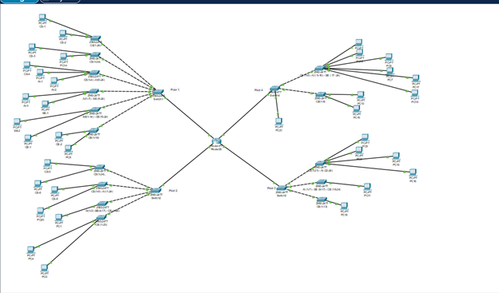

AI + Software
Fraud Detection
ML-based anomaly detection system designed to flag suspicious patterns in transaction data.
Focus areas: data preprocessing, model evaluation, and clear reporting of risky cases.
Project Gallery
Explore course and practice projects across AI, networking, and software engineering.
AI + Software
ML-based anomaly detection system designed to flag suspicious patterns in transaction data.
Focus areas: data preprocessing, model evaluation, and clear reporting of risky cases.

Networking
University network design using Cisco tools, routing concepts, and organized device planning.
Focus areas: subnet planning, topology layout, connectivity testing, and documentation.

AI
Disease prediction concept using AI models and a simple user flow for entering symptoms.
Focus areas: responsible prediction flow, readable output, and room for model improvement.